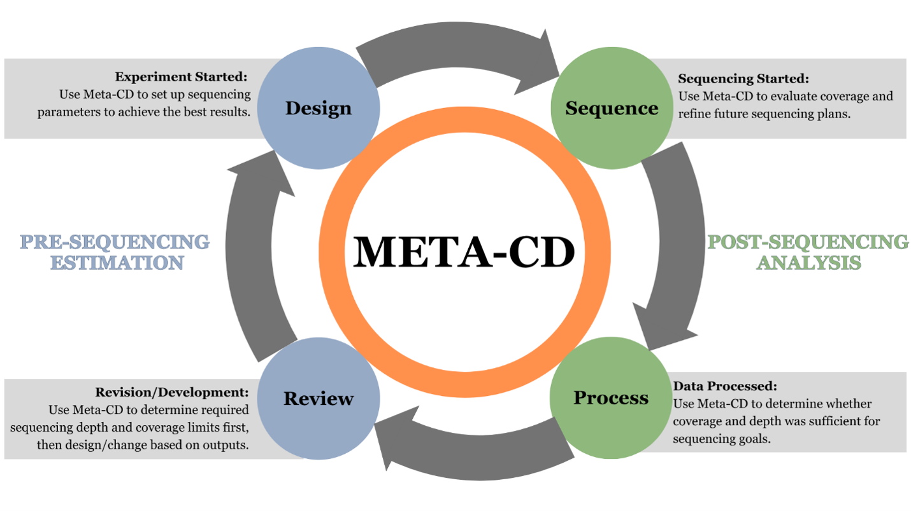

This tutorial demonstrates how Meta‑CD was validated using the MBARC‑26 mock community, a defined mixture of 26 bacterial and archaeal genomes with known genome sizes, molarity, genome copy numbers, and sequencing representation. Because MBARC‑26 provides experimentally measured abundances and sequencing depth, it is an ideal benchmark for evaluating species‑specific coverage predictions.
Accurately determining whether a target microbial species can be detected in a shotgun metagenomic sequencing study requires understanding how biological and sequencing parameters interact(1–3). Meta‑CD determines coverage and depth for targeted metagenomic applications where the abundance of the organism of interest is known, estimated, or experimentally controlled, including enrichment cultures, selective growth conditions, and mock communities where species‑specific coverage predictions are biologically meaningful. In these settings, genome size and relative abundance shape the biological context, while sequencing depth and DNA input constrain the number of unique molecules available; however, this interaction is poorly modeled, hindering biologically motivated experimental design and sequencing analysis(2–4). Consequently, researchers lack a simple way to assess detectability of a target species under biologically relevant sequencing constraints(2,5), and additional parameters must be integrated to inform functional pathway analysis and MAG recovery(6). Meta‑CD addresses this gap by integrating biological and sequencing parameters to support two use cases: pre‑sequencing estimation of required depth to reach a target coverage threshold, and post‑sequencing analysis of species‑specific coverage given sequencing depth and relative abundance, enabling users to refine experimental planning or evaluate sequencing outcomes at any stage of a metagenomic study.

MBARC‑26 is a defined mock community containing 26 microbial genomes with published genome sizes (1.8–6.5 Mb), genome copy numbers, and mapped read abundances. The dataset includes a total sequencing depth of 155.8 Gb, enabling direct comparison between expected and observed coverage.
The examples below demonstrate how each user‑controlled parameter in Meta‑CD influences coverage, detection, and sequencing requirements. These scenarios use real values from the MBARC‑26 dataset to illustrate how the tool behaves under different experimental goals.
A researcher wants to recover a high‑quality MAG for Terriglobus roseus. They know the genome size and estimated abundance from a pilot experiment and want to determine how much sequencing is required.
Drequired = (Ctarget × G) / (1000 × A)
Result: 5.04 Gb required to reach 20× coverage.
After sequencing the MBARC‑26 community at 155.8 Gb, the researcher wants to evaluate how deeply Terriglobus roseus was sequenced.
Bspecies = Dcommunity × 10⁹ × A
Result: 3.225 × 10⁹ bases sequenced.
C = (Deffective × 1000 × A) / G
Result: 616.9× coverage (matches observed ~617×).
A researcher wants to know the lowest abundance at which Escherichia coli would be detectable in a metagenomic sample sequenced at 30 Gb.
Amin = (Ctarget × G) / (1000 × Deffective)
Result: 0.00077% minimum abundance required.
A researcher has only 0.5 ng of DNA available from a low‑biomass sample and wants to know how this constraint affects coverage for Segniliparus rotundus.
Because DNA input limits library complexity:
Deffective = min(80 Gb, 0.5 Gb) = 0.5 Gb
C = (0.5 × 1000 × 0.0141) / 3.16
Result: 2.23× coverage (DNA‑limited; cannot reach 10×).
This scenario demonstrates how DNA Input caps effective sequencing depth and can prevent a species from reaching the desired coverage even with high sequencing effort.
The close agreement between expected and observed coverage confirms that Meta‑CD’s deterministic model accurately captures the relationship between sequencing depth, genome size, and relative abundance. This validation demonstrates that Meta‑CD can be used to evaluate species‑specific coverage in targeted or constrained metagenomic studies where abundances are known or experimentally controlled.